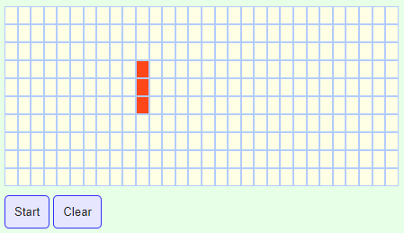
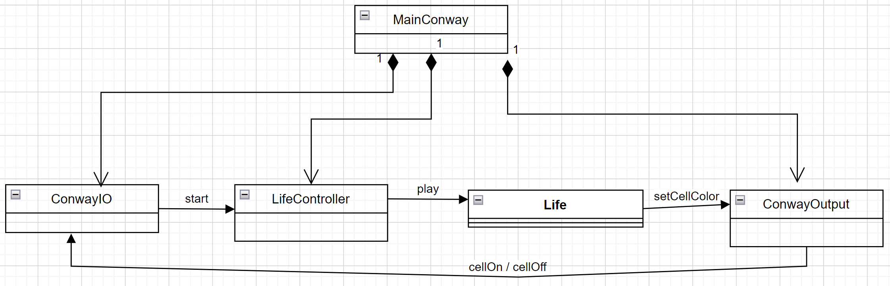
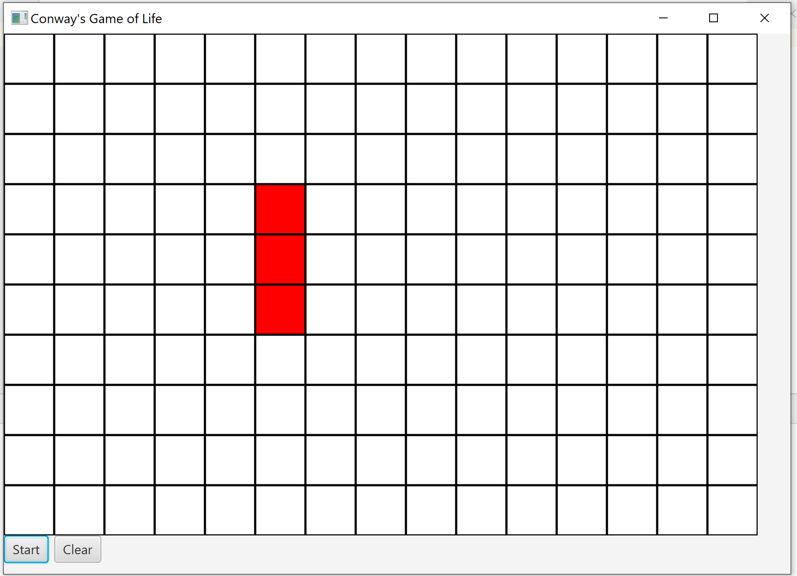

ConwayLife¶
Il gioco¶
Una griglia rettangolare (detta mondo) di caselle quadrate (dette celle) si estende all’infinito in tutte le direzioni.
Gli stati di tutte le celle in un dato istante sono usati per calcolare lo stato delle celle all’istante successivo.
Ogni cella ha 8 celle vicine.
Le celle del mondo vengono aggiornate simultaneamente nel passaggio (generazione) da un istante a quello successivo secondo le seguenti regole:
Si veda: https://playgameoflife.com/
Le regole del gioco¶
Una cella viva con meno di due celle vive adiacenti muore, per isolamento.
Una cella viva con due o tre celle vive adiacenti sopravvive alla generazione successiva.
Una cella viva con più di tre celle vive adiacenti muore, per sovrappopolazione.
Una cella morta con esattamente tre celle vive adiacenti diventa viva, per riproduzione.
Il gioco in pratica¶
|

|
Il progetto di una soluzione¶
un sistema software concentrato che definisce a manipola la griglia di Conway come una struttura dati
un sistema software distribuito in cui ciascuna cella è un ente attivo ed autonomo, capace di intergire con le altre celle solo attraverso scambio di messaggi, in toale assenza di memoria comune.
In ogni caso, il progetto del sistema distingue due macro-parti di codice (sottosistemi):
il sottosistemi che realizza la logica applicativa;
il sottosistemi che realizza la parte di Input/Output.
Un progetto concentrato¶
Nel seguito presentiamo due esempi di soluzione, una scritta in JavaScript (main.resources.conwayJS)
e una in Java (main.java.conway).
il codice che realizza la logica applicativa viene definito in conwaycore.js e Life.java;
il codice che realizza la parte di Input/Output viene definito in conwayio.js e ConwayIO.java
Vedremo che le due soluzioni sono molto simili per quento riguarda la logica applicativa, mentre differiscono sensibilmente per quanto riguarda la parte di Input/Output.
I seguiti nella scrittura del codice sono:
, ma solo invocare funzioni di livello applicativo.
che la logica applicativa ritiene per lei necessarie, e non viceversa.
La logica applicativa¶
La struttura¶
consiste nel rappresentare la griglia come un Array di Array di valori 0 (cella morta)/1 (cella viva)`.
conwaycore.js var rows = 10;
var cols = 20;
var grid = new Array(rows);
var nextGrid = new Array(rows);
|
Life.java private int rows = 10;
private int cols = 20;
private static int[][] grid;
private static int[][] nextGrid;
|
La variabile nextGrid viene introdotta per rappresentare il risultato del Calcolo della nuova generazione di celle.
Il funzionamento¶
consiste nel Calcolo della nuova generazione di celle, che, partendo dallo stato iniziale di grid, procede in due fasi:
Fase1: per ogni cella della griglia si fa il Conteggio delle celle vicine vive;
Fase2: si applicano Le regole del gioco alle celle, le cui sorti dipendono dal risultato del conteggio.
Questa specifica in linguaggio naturale può essere formalizzata in un linguaggio comprensibile alla macchina introducendo una funzione, qui denominata computeNextGen:
Calcolo della nuova generazione¶
La nuova generazione di celle si ottiene costruendo una nuova versione della griglia (nextGrid) mediante la Applicazione delle regole del gioco ad ogni cella della griglia corrente (grid).
Il codice in JavaScript è quasi identico a quello scritto in Java:
conwaycore.js function computeNextGen() {
for (var i = 0; i < rows; i++) {
for (var j = 0; j < cols; j++) {
var n = countNeighborsLive(i,j);
applyRules(i, j, n );
}
}
}
|
Life.java protected void computeNextGen() {
for (int i = 0; i < rows; i++) {
for (int j = 0; j < cols; j++) {
int n = countNeighborsLive(i,j);
applyRules(i, j, n);
}
}
}
|
Conteggio delle celle vicine vive¶
Il conteggio delle celle vive vicine alla cella di coordinate row,col deve guardare alla celle limitrofe. Tenendo conto che grid è di dimensioni finite, ciò significa guardare:
sulla riga row-1 (se esiste), le celle col-1 (se esiste), col e col+1 (se esiste)
sulla riga row+1 (se esiste) le celle col-1 (se esiste), col e col+1 (se esiste)
la cella di coordinate row,col-1 (se esiste) e row,col+1 (se esiste)
Anche ora, il codice in JavaScript è quasi identico a quello scritto in Java:
conwaycore.js function countNeighborsLive(row, col) {
var count = 0;
if (row-1 >= 0) {
if (grid[row-1][col] == 1) count++;
}
if (row-1 >= 0 && col-1 >= 0) {
if (grid[row-1][col-1] == 1) count++;
}
if (row-1 >= 0 && col+1 < cols) {
if (grid[row-1][col+1] == 1) count++;
}
if (col-1 >= 0) {
if (grid[row][col-1] == 1) count++;
}
if (col+1 < cols) {
if (grid[row][col+1] == 1) count++;
}
if (row+1 < rows) {
if (grid[row+1][col] == 1) count++;
}
if (row+1 < rows && col-1 >= 0) {
if (grid[row+1][col-1] == 1) count++;
}
if (row+1 < rows && col+1 < cols) {
if (grid[row+1][col+1] == 1) count++;
}
return count;
}
|
Life.java protected int countNeighborsLive(int row, int col) {
int count = 0;
if (row-1 >= 0) {
if (grid[row-1][col] == 1) count++;
}
if (row-1 >= 0 && col-1 >= 0) {
if (grid[row-1][col-1] == 1) count++;
}
if (row-1 >= 0 && col+1 < cols) {
if (grid[row-1][col+1] == 1) count++;
}
if (col-1 >= 0) {
if (grid[row][col-1] == 1) count++;
}
if (col+1 < cols) {
if (grid[row][col+1] == 1) count++;
}
if (row+1 < rows) {
if (grid[row+1][col] == 1) count++;
}
if (row+1 < rows && col-1 >= 0) {
if (grid[row+1][col-1] == 1) count++;
}
if (row+1 < rows && col+1 < cols) {
if (grid[row+1][col+1] == 1) count++;
}
return count;
}
|
Applicazione delle regole del gioco¶
Le regole del gioco vengono realizzate da una funzione (applyRules) che decide le sorti di una cella di coordinate row,col all’interno di grid:
conwaycore.js function applyRules(row, col, numNeighbors) {
//CELLA VIVA
if (grid[row][col] == 1) {
if (numNeighbors < 2) { //muore isolamento
nextGrid[row][col] = 0;
}else if(numNeighbors==2 || numNeighbors==3){
nextGrid[row][col] = 1; //sopravv
}else if (numNeighbors > 3) { //muore sovrapp
nextGrid[row][col] = 0;
}
}
//CELLA MORTA
else if (grid[row][col] == 0) {
if (numNeighbors == 3) { //riproduzione
nextGrid[row][col] = 1;
}
}
}
|
Life.java protected void applyRules(int row,int col,int numNeighbors){
//CELLA VIVA
if (grid[row][col] == 1) {
if (numNeighbors < 2) { //muore isolamento
nextGrid[row][col] = 0;
}else if(numNeighbors==2 || numNeighbors==3){
nextGrid[row][col] = 1; //sopravv
}else if (numNeighbors > 3) { //muore sovrapp
nextGrid[row][col] = 0;
}
}
//CELLA MORTA
else if (grid[row][col] == 0) {
if (numNeighbors == 3) { //riproduzione
nextGrid[row][col] = 1;
}
}
}
|
Un volta disponibile la nuova generazione di celle, occorre:
Rendere visibile il risultato su un dispositivo di Output
Copiare nextgrid in grid e rieseguire il Calcolo della nuova generazione
La specifica risultante del funzionamento delineato in linguaggio naturale, può essere formalizzata da una unica funzione denominata Play:
Play¶
conwaycore.js function play() {
computeNextGen();
copyAndDisplayGrid();
}
|
Life.java public void play() {
computeNextGen();
copyAndDisplayGrid();
}
|
copyAndDisplayGrid¶
La funzione copyAndDisplayGrid :
copia nextgrid in grid
reinizializza nextgrid
visualizza ogni cella sul dispositivo di output assumendo l’esistenza di una funzione setCellColor realizzata dal Sottosistema di Output
conwaycore.js function copyAndDisplayGrid() {
for (var i = 0; i < rows; i++) {
for (var j = 0; j < cols; j++) {
grid[i][j] = nextGrid[i][j];
setCellColor(i,j,grid[i][j])
nextGrid[i][j] = 0;
}
}
}
La funzione setCellColor è definita nel file conwayio.js. Si veda Il sottosistema di I/O in JavaScript. |
Life.java protected void copyAndDisplayGrid() {
for (int i = 0; i < rows; i++) {
for (int j = 0; j < cols; j++) {
grid[i][j] = nextGrid[i][j];
outdev.setCellColor(i,j,grid[i][j]);
nextGrid[i][j] = 0;
}
}
}
La funzione setCellColor è definita in un oggetto outdev, istanza di La classe ConwayOutput. |
Ripetizione di play¶
il gioco consiste nella esecuzione ripetuta della funzione play, che viene ottenuta in modi diversi in JavaScript e in Java.
Sfrutta il meccanismo setTimeout in conwaycore.js function doPlay(){
if( playing ){
play();
timer = setTimeout(doPlay, 500);
}
}
|
Sfrutta il meccanismo AnimationTimer in La classe LifeController ...
AnimationTimer runAnimation = new AnimationTimer() {
private long lastUpdate = 0;
@Override
public void handle(long now) {
long dt = TimeUnit.MILLISECONDS.toNanos((long) generationTime);
if ((now - lastUpdate) >= dt)) {
life.play();
lastUpdate = now;
}
...
}
|
Configurazione e attivazione¶
nel caso di JavaScript è molto diversa da quella di Java.
JavaScript permette (o forse promuove) la definzione di un insieme ‘piatto’ di funzioni che vengono definite all’interno di una pagina HTML;
Java obbliga a definire un ineieme di classi, promuovendo un visione del softwrae più orientata ai sistemi che non ai semplici algoritmi.
JavaScript Il codice JavaScript realizza il sistema includendo il codice all’interno di una pagina HTML, visualizzabile con un comune Browser. <html>
...
<script src="conwaycore.js"></script>
<script src="conwayio.js"></script>
</html>
|
Java Il codice Java realizza il sistema introducendo diverse classi:
|
Il codice JavaScript¶
JavaScript permette di realizzare il sistema Conway all’interno di una pagina HTML, visualizzabile con un comune Browser.
File conway.html <head>
<meta charset = "UTF-8" />
<title>The Game of Life</title>
<link rel="stylesheet" href="life.css">
</head>
<body>
<!-- sezione di OUTPUT -->
<div id="gridContainer">
</div>
<!-- sezione di INPUT -->
<div class="controls">
<button id="start"><span>Start</span></button>
<button id="clear"><span>Clear</span></button>
</div>
<script src="conwaycore.js"></script>
<script src="conwayio.js"></script>
</body>
|


|
{kind=link}
Il file conwaycore.js contiene:
la logica applicativa discussa in precedenza: function copyAndResetGrid() { ... }
function play() { ... ]
function computeNextGen() { ... }
function applyRules(row, col, numNeighbors) { ... }
function countNeighborsLive(row, col) { ... }
|
funzioni di utilità: function initializeGrids() { ... }
function resetGrids() { ... }
function configureTheSystem() { ... }
function setCellState{ ... } //cellClickHandler
|
Il file conwayio.js definisce il sottisistema di I/O e viene descritto in Il sottosistema di I/O in JavaScript.
viene definita nel file conwaycore.js
function configureTheSystem() {
initializeGrids(); //crea la struttura a griglia
resetGrids(); //pone 0 (dead) lo stato di tutte le celle
initIO(rows,cols) //in conwayio.js crea la griglia in HTML e i control buttons
}
function initIO(rows,cols){
createHtmlTable(rows,cols);
setupControlButtons(rows,cols);
}
viene realizzta da una istruzione posta al termine del file conwayio.js
window.onload = configureTheSystem;
Il codice Java¶
Il codice Java realizza il sistema introducendo diverse classi
{kind=link}
|
 |
{kind=link}
La classe Life¶
public class Life {
//La struttura
private int rows = 10;
private int cols = 20;
private static int[][] grid;
private static int[][] nextGrid;
private ConwayOutput outdev;
public Life( int rowsNum, int colsNum, ConwayOutput outdev ) {
this.rows = rowsNum;
this.cols = colsNum;
this.outdev = outdev;
initializeGrids(); //crea la struttura a griglia
initGrids(); //pone 0 lo stato di tutte le celle
}
protected void initializeGrids() {
grid = new int[rows][cols];
nextGrid = new int[rows][cols]; //???
}
protected void initGrids() {
for (int i = 0; i < rows; i++) {
for (int j = 0; j < cols; j++) {
grid[i][j] = 0;
setCellState( i, j, false );
nextGrid[i][j] = 0;
}
}
}
public void play() { ... }
protected void computeNextGen() { ... }
protected void copyAndDisplayGrid() { ... }
protected void applyRules(int row, int col, int numNeighbors) { ... }
La classe ConwayOutput¶
La versione Java mostra in modo esplicito che la funzione setCellColor è definita da un oggetto outdev di classe ConwayOutput, che viene fornito alla logica applicativa con un meccansimo di iniezione alla costruzione da un configuratore di sistema (in pratica il main program definito in La classe MainConway).
public class ConwayOutput {
public void setCellColor( int i, int j, int state ){
if( state == 0 ) ConwayIO.cellOff(i,j);
else ConwayIO.cellOn(i,j);
}
}
La classe ConwayOutput realizza l’adapter tra la logica applicativa e il sottosistema di Output definito, più avanit, in La classe ConwayIO.
La classe LifeController¶
public class LifeController {
private int generationTime = 1000;
public Button startStop;
public Slider slider;
private Life life;
public LifeController( Life game){ //,GridPane gameGrid, Button startStop
this.startStop = startStop;
this.life = game;
}
public void cellClicked(MouseEvent e) {...}
public void startStopClicked(Boolean isStart, Button startStop) {
AnimationTimer runAnimation = new AnimationTimer() {
private long lastUpdate = 0;
@Override
public void handle(long now) {
long dt = TimeUnit.MILLISECONDS.toNanos((long) generationTime);
if ((now - lastUpdate) >= dt)) {
life.play();
lastUpdate = now;
}
if( startStop.getText().equals("Start") ){
CommUtils.outred("LifeController | runAnimation STOPPED " );
this.stop();
}
}
};
if( isStart ){
runAnimation.start();
startStop.setText("Stop");
} else {
//CommUtils.outred("LifeController | STOPPED " );
startStop.setText("Start");
}
}
viene realizzata da La classe MainConway.
La classe MainConway¶
Il main della classe Java viene introdotto come specializzazione della classe javafx.application.Application in quanto si vuole usare JavaFX come tecnologia di costruzione dei dispositivi virtuali di I/O.
public class MainConway extends Application{
protected void configureTheSystem(){
ConwayOutput outdev = new ConwayOutput();
Life life = new Life(10,20, outdev);
LifeController cc = new LifeController(life);
new ConwayIO(life.getRowsNum(), life.getColsNum(), cc);
}
@Override
public void start(Stage primaryStage) throws Exception {
ConwayIO.setTheStage(primaryStage); //injection
configureTheSystem();
}
public static void main(String[] args) {
launch();
}
viene realizzata invocando il metodo launch di javafx.application.Application, che pone in esecuzione il metodo start. Il sistema Java viene dunque eseguito nel thread JavaFX Application e non nel thread main.
Il sottosistema di I/O in JavaScript¶
Il codice relativo alla costruzione di dispositivi virtuali di I/O nella pagina HTML, parte dalla definizione della sezione di OUTPUT (elemento con id=”gridContainer”) e dei pulsanti di controllo (elemento con id=”start” e con id=”clear”).
<!-- sezione di OUTPUT -->
<div id="gridContainer">
</div>
<!-- sezione di INPUT -->
<div class="controls">
<button id="start"><span>Start</span></button>
<button id="clear"><span>Clear</span></button>
</div>
La table delle celle¶
La visualizzazione della grid corrente si basa su una tabella (matrice) di una dato numero di righe (rows) e colonne (cols) che viene costruita dalla funzione che segue:
function createHtmlTable(rows,cols) {
var gridContainer = document.getElementById('gridContainer');
if (!gridContainer) {
console.error("Problem: No div for the drid table!");
}
var table = document.createElement("table");
for (var i = 0; i < rows; i++) {
var tr = document.createElement("tr");
for (var j = 0; j < cols; j++) {
var cell = document.createElement("td");
cell.setAttribute("id", i + "_" + j);
cell.setAttribute("class", "dead");
cell.onclick = cellClickHandler;
tr.appendChild(cell);
}
table.appendChild(tr);
}
gridContainer.appendChild(table);
}
La tabella è costruita in modo che ogni suo elemento cell abbia come attributi
l’attributo id di valore i_j (per rappresentare le coordinate)
l’attributo class di valore dead (di default) oppure live
una funzione di controllo-utente (cellClickHandler) per permettere all’utente finale di porre (con un click) la cella nello stato live oppure ancora dead
cellClickHandler¶
L’impostazione strutturale della tabella delle celle, si accompagna alla funzione di controllo-utente che segue:
function cellClickHandler() {
var rowcol = this.id.split("_");
var row = rowcol[0];
var col = rowcol[1];
var classes = this.getAttribute("class");
if(classes.indexOf("live") > -1) {
this.setAttribute("class", "dead");
setCellState(row,col,0)
} else {
this.setAttribute("class", "live");
setCellState(row,col,1)
}
}
La funzione setCellState è definita nel file conwaycore.js che protegge la visibilità della variabile grid
setCellColor¶
La modifica del colore delle celle della griglia viene esguita da una funzione che il codice della logica applicativa suppone disponibile.
function setCellColor( i,j,state ){
var cell = document.getElementById(i + "_" + j);
if( state == 0 ) cell.setAttribute("class", "dead");
else cell.setAttribute("class", "live");
}
I pulsanti di controllo¶
I pulsanti che l’utente finale può usare per attivare/sospendere il gioco sono costruiti da una funzione che crea elementi cui sono associati opportune funzioni di gestione.
function setupControlButtons(rows,cols) {
// button to start
var startButton = document.getElementById('start');
startButton.onclick = startButtonHandler;
// button to clear
var clearButton = document.getElementById('clear');
clearButton.onclick = clearTheGrid;
}
Attivazione/pausa function startButtonHandler() {
if (isPlaying()) { // in conwaycore.js
console.log("Pause the game");
playing = false;
this.innerHTML = "Continue";
clearTimeout(timer);
} else {
console.log("Continue the game");
playing = true;
this.innerHTML = "Pause";
doPlay();
}
}
function doPlay(){
if( playing ){
play();
timer = setTimeout(doPlay, 500);
}
}
|
Azzeramento delle celle live sulla griglia di output function clearTheGrid() {
stopPlaying();
var startButton=document.getElementById('start');
startButton.innerHTML="Start";
clearTimeout(timer); //timer in conwaycore.js
var cellsList=document.getElementsByClassName("live");
var cells = [];
for (var i = 0; i < cellsList.length; i++) {
cells.push(cellsList[i]);
}
for (var i = 0; i < cells.length; i++) {
cells[i].setAttribute("class", "dead");
}
resetGrids(); //in conwaycore.js
}
|
Il sottosistema di I/O in JavaFx¶
La classe ConwayIO.java definisce il sottosistema di I/O realizzato con tecnologia JavaFX. Essa:
Riceve un oggetto di classe javafx.stage.Stage per injection da parte del metodo start de La classe MainConway.
Crea la scena del gioco che include una matrice di celle rettangolari (OUTPUT) e i pulsanti Start / Clear di INPUT. Ciascuna cella creata dal metodo createCells è associata a un javafx.event.EventHandler che invoca il metodo cellClicked de La classe LifeController in modo da permettere all’utente finale di modificare il colore (e quindi lo stato di una cella nella fase iniziale del gioco.
Associa ai pulsanti un javafx.event.EventHandler che connette un click del pulsante
Startal metodo startStopClicked de La classe LifeController e un click del pulsanteClearal metodo clearTheCells de La classe LifeController.Definisce i metodi cellOn/cellOff per permettere alla classe Life (attraverso La classe LifeController) di cambiare il colore di una cella, quando il suo stato passa da dead a live e viceversa.
{kind=link}
La classe ConwayIO¶
public class ConwayIO {
private static int CELL_SIZE = 45;
private static Rectangle[][] cells ;
private static Stage stage; //injected by start in MainConway
private GridPane gridPane;
private Scene scene;
private Button bstart;
private Button bclear;
private int rows=0;
private int cols=0;
private LifeController cc;
public ConwayIO( int rows, int cols, LifeController cc ){
this.cc = cc;
this.rows = rows;
this.cols = cols;
createScene( );
}
public static void setTheStage(Stage primaryStage){
stage = primaryStage;
}
protected void createScene( ){
/*
Crea e configura scena e pulsanti di Input
*/
...
createCells( );
stage.show();
}
protected void createCells( ){
cells = new Rectangle[rows][cols];
for (int row = 0; row < rows; row++) {
for (int col = 0; col < cols; col++) {
cells[row][col] = new Rectangle(CELL_SIZE, CELL_SIZE);
cells[row][col].setId(row+","+col);
cells[row][col].setFill( Color.WHITE );
cells[row][col].setStroke( Color.BLACK );
gridPane.add( cells[row][col], col, row ) ;
cells[row][col].addEventHandler(MouseEvent.MOUSE_CLICKED,
e -> cc.cellClicked(e)
);
}//col
}//row
}
public static void cellOn(int i, int j){
if( cells == null ) return;
cells[i][j].setFill(Color.RED);
}
public static void cellOff(int i, int j){
if( cells == null ) return;
cells[i][j].setFill(Color.WHITE);
}
}